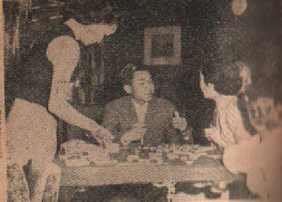

（２８）皇太子様と麻雀
歴史No.24で、「今上陛下の麻雀」の話をした。そこでも書いた通り、これはイギリスのエジンバラ公の即位式に、アメリカ経由でゆくときの船中での話。しかし、陛下（当時は皇太子殿下）が船中で麻雀を楽しまれたというだけで、詳しいことはなにも分からなかった。 しかしこちらで紹介した「りべらる」という雑誌に、その時の状況が詳しく書かれている。執筆者は、そのとき同行した毎日新聞の記者である藤樫準二（ふがしじゅんじ）という人。われわれ愛雀家には興味深いエピソードであるので、ご紹介する。
といっても何かと娑婆の規則があるので、これも抜粋での紹介となる。どうしても全文を読みたい人とは、ガンバって雑誌「りべらる増刊号」を手に入れてくれたまひ....(^-^；＊ ＊ ＊ ＊ ＊
マージャンは天皇家の健全娯楽
じつは早くから耳にしていたものの、一部識者の間では公然の秘密となっていた。よほど前であるが、皇居におけるある日曜日のお集いに、皇太子、義宮のご兄弟からマージャンの話題が出た。両殿下とも興味の真っ最中だったらしく、運と技による併行ゲームの楽しさは、ブリッジや将棋と異なった持ち味をお話しされた。
「おもうさま、とても面白いものですよ」
陛下も「ウン、ウーン」と合槌ちをうっておられたが、次のお集まりには皇太子様ご持参の牌を手に、これが索子、これが万子という風に、役とかテンパイを一通りご習得の上、１，２回の手ほどき練習をあさばされた。
浅見：「おもうさま」は、お父様。お母様は「おたあさま」
皇太子様のマージャンがお好きなことは外遊以来有名となった。覚えはじめの１，２年間は興味がわいて熱中する一般現象と同様、皇太子様にもそんな時代があったらしい。
ちょうど外遊の頃が、その時代だったのではなかろうか。私も特派員として同行、船中生活においてときたま殿下のお相手をしてのお手並みから、そんな風に感じたのである。
ウイルソン号上の麻雀
あのウイルソン号で、皇太子様もいささかお疲れとみえ、四月一日のエープリルフールは終日部屋にとじこもっておられたが、翌朝はカラリと晴れ、船旅に慣れてきた船客は、デッキにスモーキングルームに元気な顔をどっと見せた。一等船客186名のうち、殿下一行の我々特派員、それに実業家など邦人は約40人も占めていた。そんな関係から船長は御旅情に注意を払い、前日来、掲示の一等船客対校試合としてピンポン、囲碁、将棋、麻雀の四種目競技を開始した。
マージャンは本場の中国女性、董さんが幹事をつとめて出場。殿下にもミス・ショーさん、それにフィリッピンの青年が加わり、がぜん国際マージャンと化した。周囲の卓には外人同士のトランプ、随行員やわれわれ仲間の碁将棋が展開。カメラマンは殿下の初マージャンをパチパチねらう。中にはポーズに苦心して金髪の乙女を配するに、スモーキングルームが急に明るい団らんにつつまれた。互いにエチケットを守って行儀がよい。殿下のマージャン卓を後ろからのぞき込む者もいなかった。

董さんが片言の日本語と英語でしきりとルールや計算を説明するのが、近くで碁を打つ私どもの耳に軽くひびき、そのうちにゲームが進展し、中途でいったん休憩した。午後も続行となったが。トップは董さんということであった。囲碁将棋は外人の出場者がなく、われわれ仲間だけでトーナメント式にかたづけ、殿下は碁はやられないが将棋に参加され、決勝戦で失敗だった。
殿下の麻雀仲間
この董さんは、本名を董慶稀（27才）といい、かって日本へ亡命した中国の政客、曹汝霖氏の令嬢で、滞米中の夫君の所へ行く途中とのこと。顔立ちは京都風の淑やかな美人で、いつも上品な支那服をまとい、卓下で高々と裾から肌色のストッキングもこぼれてみえるというあでやかさ。船中の花であった。
退屈しのぎに殿下がブラブラとスモーキングルームにおいでになると、彼女はいつも
「プリンス、マージャンはいかが」とお誘いする。彼女の他にももう一人中国のうら若い女性で、子供連れの李廓夫人（香港の実業家）、わが社の藤田君（現ロンドン支局長）、がメンバーとなって対局。殿下とこれら中国女性をとりまくテーブルは、常に人気の的であった。
若い特派員の中には、マージャンを習っておけばよかったと、いまさらながら後悔している者もいる始末。殿下のお相手としてか、それとも若い中国女性に大してか聞き漏らしたが、今の若い記者はマージャンもしらない善良さである。
お召しを受けて
どうしてお知りになったのか、突然、藤田君のほかに共同の田中君と私に、マージャンがしたいからとお呼び出しがあった。下手な私もチャンスとばかりまかり出た。牌をかき回しながら
「中国式のやり方はいかがでしたか｝
「どうも、役と計算がわからないので面白くなかった。やっぱり日本式がいい」とおっしゃった。
こんな話をかわされて、リーチ、レンチャン百つき、役は主なるものにとどめ、ありふれた普通のやり方でスタートした。始めてすぐ気がついたのは、殿下が左手で牌をツモられることであった。なのにテニスやピンポンのラケットは右手をご使用になり、要するに殿下は器用に両手を使い分けられることを発見したのである。あとで黒木侍従に尋ねてみたら、少年時代まではいわゆる左利きだったのをだんだんお直しして、今では自由に左右を利用されるとのことであった。
第一回はレンチャンもそうなくすらすらと進行し、ホンイツ程度が最高で誰にも大きな手がつかなかった。そして戦績も殿下はトップになれなかった。サンフランシスコに上陸するまで２，３回お相手したが、その打法を場でみていると、決して無理なガメリ方をなさらない。勿論チーポンもされ、早くあがるの正道一筋で、リーチがかかると安全を期されているのがよくわかる。相手を牽制するとか、威嚇的な戦術は殆ど見あたらなかった。若さからの溌剌、敢然というより、淡々として野心なき清廉な打ち方であった。それがまた殿下の清らかな性格の現れとも思えた。
殿下は第二位
カナダ大陸での忙しい公式待遇が終わって、ニューヨークからウイルソン号の４，５倍もある大西洋航路のエリザベス号に乗船、殿下もホッと一息つかれたのであった。何しろ一等船客が683名、食堂ボーイが140名もいる。ウイルソン号の食堂ではＡＢの二班に分かれて食事したが、ここではそんなことはない。
しかしスモーキングルーム、バーがいくつもあったが、囲碁将棋とかマージャンなどのあろう筈もない。殿下の娯楽としてはピンポンだけであった。そのピンポンを二日がかりで、チェッコの外交官マイスナー君（36才）を見事に制覇され、青い目の紳士淑女が初めて日本の皇太子であることを知り、あわてて「オーオー、ジャパンプリンス」とやんやと拍手を送ったものであった。
ニューヨークまで出迎えかたがた事務打ち合わせのため乗船した朝海駐英公使が、殿下の船中のお慰みとしてマージャン牌を持ち込んでいた。退屈の折り、あまり船客ので入りしないスモーキングに持ち出して内々楽しんだこともあった。ウイルソン号では練り牌で、チョーマの代わりにポーカーチップであったが、朝海公使のは旧式の大きい骨牌で、持ち運ぶのも重いくらいであった。
昼間はバーのスモーキングに陣取り、タバコの灰皿に計算棒を入れ、殿下はカクテル、田中君と私はオレンジエードか何かを飲みながら、いたって気楽にガラガラとはじめた。
東、南で夕食となったので、いちおう計算しておいたが、そのときは藤田、殿下、田中、ビリに私という順位だった。夕食後続行し、西が終わり北風になったとたんに戸田侍従がかけつけ、
「サザンプトン市街の淡い光が浮かんでまいりましたから、どうぞご準備を」
即時中止した。これが船中、名残の楽しい麻雀であった。
私も数年ぶりで牌を握り、思いがけないお相手に役立ったことは内心嬉しかった。十代の殿下に、五十代の田中君と私が精一杯お相手した。私共にとっては一生の忘れがたい印象となった。